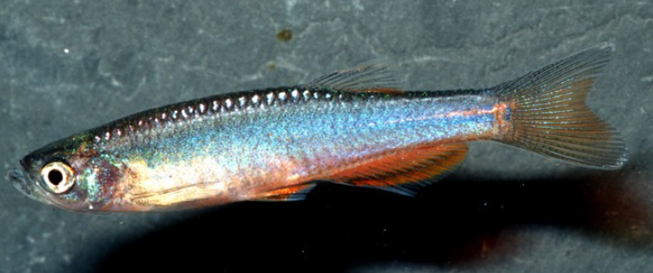
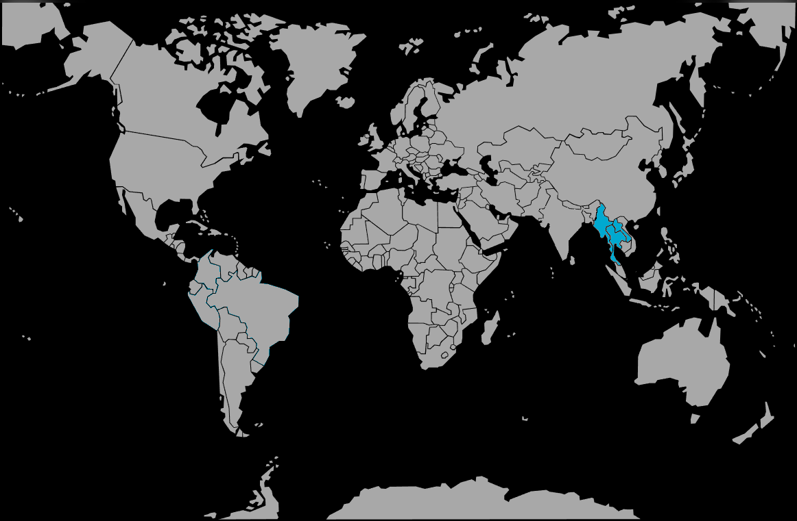

Systématique
- Ordre : Cypriniformes
- Famille : Danionidae
- Genre : Danio
- Espèce : D. roseus

Danio roseus, connu sous le nom commun de Danio rose, est une espèce d'Asie du Sud-Est décrite scientifiquement en l'an 2000. Il est proche génétiquement du Danio albolineatus mais s'en distingue par une morphologie plus trapue et haute.
Il mesure adulte entre 3,5 et 5 cm. Sa particularité réside dans sa coloration : il ne présente pas de rayures horizontales marquées comme le Danio rerio, mais une couleur de fond rose violacé à lilas, avec des reflets irisés spectaculaires sous un bon éclairage.
C'est un poisson extrêmement attrayant pour les aquariums plantés, où sa couleur contraste magnifiquement avec le vert de la végétation.
Comme tous les membres de son genre, c'est un poisson grégaire qui doit être maintenu en banc d'au moins 8 à 10 individus.
Il est très actif, rapide et occupe la zone supérieure de l'aquarium. Il est totalement pacifique envers les autres espèces, ce qui en fait un excellent candidat pour le bac communautaire, à condition que ses colocataires ne soient pas stressés par sa vivacité. Il est réputé pour être un bon sauteur, nécessitant un bac couvert.
Mode : ovipare.
C'est un diffuseur d'œufs. Le frai a lieu généralement le matin, souvent déclenché par les premiers rayons du soleil. Les œufs non adhésifs sont dispersés parmi les plantes fines.
Il n'y a pas de soins parentaux. Les adultes sont des prédateurs opportunistes de leurs propres œufs.
Dimorphisme sexuel : Le mâle est plus svelte et présente une coloration rose/rouge beaucoup plus intense, surtout en période de reproduction. La femelle est plus grande, plus ronde au niveau du ventre et souvent plus pâle.
Espérance de vie : Environ 3 à 5 ans en captivité.
Il est originaire du bassin du Mékong, présent au Myanmar, en Thaïlande et au Laos. Il habite les petits cours d'eau forestiers et les ruisseaux ombragés, où l'eau est claire, bien oxygénée et le fond couvert de galets ou de végétation.
Répartition

Origine naturelle :
- Asie du Sud-Est (Bassin du Mékong).
- Thaïlande (Nord).
- Laos.
- Myanmar (Est).
Paramètres de maintenance
Température : 20 à 26 °C (tolère bien les températures ambiantes).
pH : 6,0 à 7,5.
GH : 2 à 15 °dGH (eau douce à moyennement dure).
Courant : Modéré. Une bonne oxygénation est appréciée.
Volume conseillé : Minimum 80 à 100 L. Malgré sa taille modeste, son besoin d'espace pour nager impose une façade d'au moins 80 cm.
Régime alimentaire
Régime : omnivore à tendance insectivore.
Dans la nature, il se nourrit d'insectes exogènes et de zooplancton.
En aquarium, il n'est pas difficile : il accepte les paillettes et granulés. Cependant, pour révéler ses reflets roses irisés, une alimentation variée incluant du vivant ou du congelé (daphnies, artémias) est indispensable.